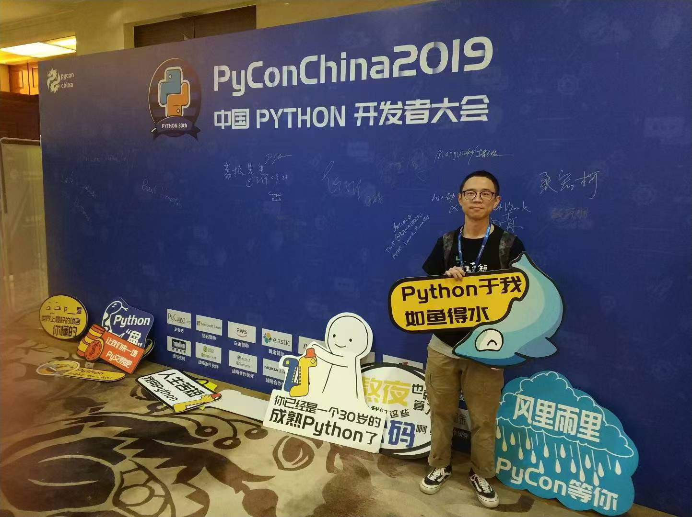

不在的5年
要是2019年就明白『只要勇敢主动地做自己喜欢的事情，就会遇到志同道合的伙伴』这个道理，我一定会更早地认识到这群和我有同样热爱的伙伴！这种总是包含后悔的思维模式，是我忍不住的想法，我摆脱不掉。只是除此之外，2024的我也有了新的想法：2019年的自己只能做那样的选择，我可以放过自己，不去后悔。专注当下，庆幸的是我还是找到了他们，什么时候都不晚，未来也总会有路。
今年偶然读了谢爱磊的《小镇做题家》和迪迪埃·埃里蓬的《回归故里》，结合自身的经历、痛苦和思考，对自己的人生轨迹和行为模式有了更深刻的认识。付航的那句『只要你敢勇敢地做自己，就一定会有人爱你』以及阎鹤祥的『不能改变是人生的常态』，给了我许多的启发与思考。
勇敢、改变、自信是我一生的课题。只是我也意识到了那些我无法左右的力量在我人生留下的印记，我生在何时何地，就决定了我是什么样的人。当我无法改变、懦弱和自卑的时候，我也要试着坦然接受。
农村和城市，是我区分中国阶层的两个术语，并不准确。从农村到城市，生存心态的转换曾经让我痛苦与迷茫。改变，意味着对过去的否定和隔绝，可我无法全盘否定过去，更没办法疏远，因为那是我内心深处的构造。
痛苦和挣扎会让人成长，大量的阅读和思考也给了我不少勇气和启发。一面是依赖直觉与自我低估，一面是掌控目标与自我肯定，夹在中间的我，也总算跌跌撞撞有了自己的想法。
从小在农村生活养成的生活习惯和思维模式并不一定全是落后和无用的，而适合城市生活中的做事做法也不一定全部值得我去效仿。接纳过去，认同自己，意识到那些你控制不了的东西，积极主动，勇敢，享受现在。
官方统计《武林外传》里祝无双的出场记录是：31-37回、51-80回。当时以为她只是个客串角色，没想到后来也加入了主角行列，成为了固定的角色。我当时看的时候，就感受到了一种美好：原来离开的人，也有可能回来，继续一起生活。
所以，我想我也可以是祝无双。不在的5年，不过就是祝无双不在的那13集。

评论